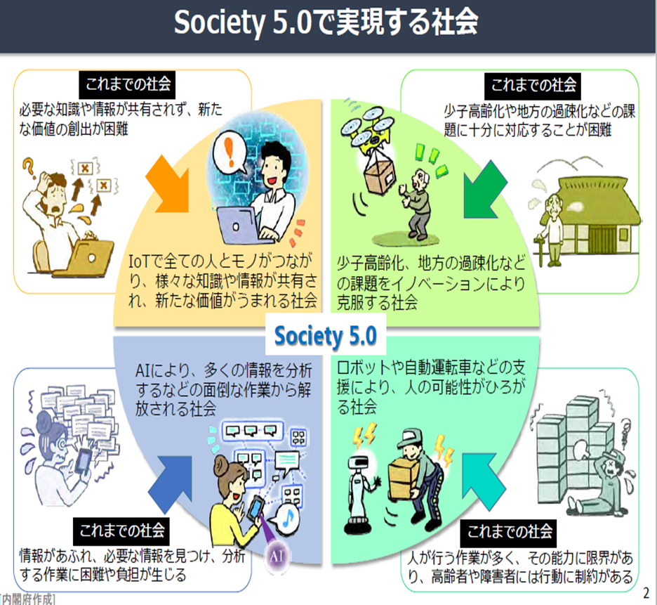
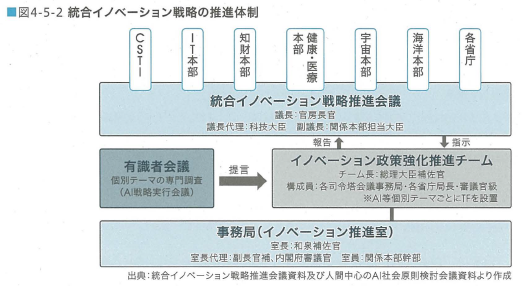
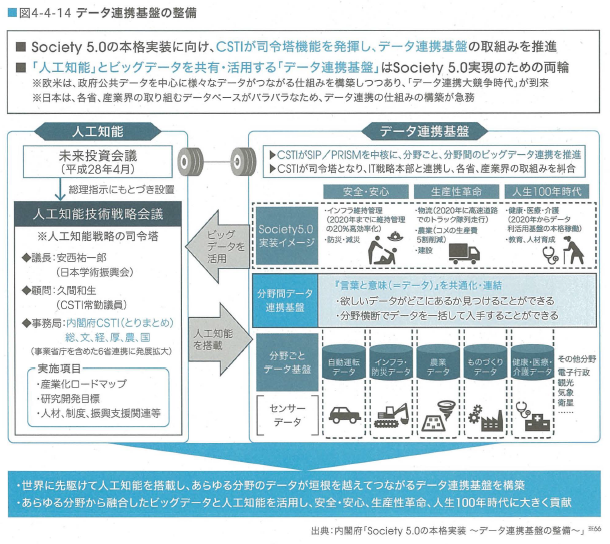
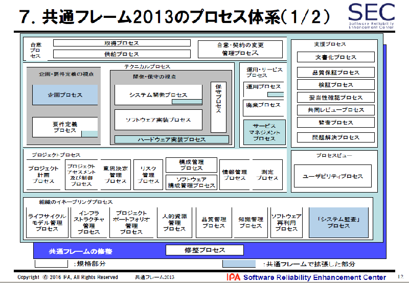

- DAX46-01次世代情報システム構築フレームワーク
- 改版履歴
- 2019年3月12日 DAX43-01と併合及び分割
- 2019年3月6日 0.11版
- 2019年3月4日 0版
- 用語
- 第4次産業革命, Society5.0, Connected Industriesの関係
- Society5.0
- 第４次産業革命技術がもたらす変化／新たな展開
- 目指すところの概念
- 新産業ビジョン
- Society5.0で実現する社会

- Society5.0では、サイバー空間とフィジカル空間を高度に融合させることにより、多様なニーズにきめ細かく対応したモノやサービスを提供し、経済的発展と社会的課題の解決を両立させる世界
- Society5.0に向けて、様々なつながりによる新たな価値社会を創出するConnected Industriesの実現に向けた当たらな産業構造の構築が必要
- これまでの情報社会(4.0)からSociety5.0への技術の変化
- Society5.0で実現する社会
- 
- Connected Industriesの考え方
- 社会の進展／国の施策
- 統合イノベーション戦略の推進体制
- 
- データ連携基盤の整備
- 
- DXとは
- Wikipediaによると
- 「ITの浸透が、人々の生活をあらゆる面でより良い方向に変化させる」という概念【2004年にスウェーデンのウメオ大学のエリック・ストルターマン教授が提唱】
- おおむね「企業がテクノロジーを利用して事業の業績や対象範囲を根底から変化させる」[2]という意味合い
- DX推進システムガイドラインによると
- 「企業がビジネス環境の激しい変化に対応し、データとデジタル技術を活用して、顧客や社会のニーズを基に、製品やサービス、ビジネスモデルを変革するとともに、業務そのものや、組織、プロセス、企業文化・風土を変革し、競争上の優位性を確立すること。」
- 「日本の中小企業は、とっくにDXを実践している」（2018年6月12日 Business Journal）
- クラウドコンピューティングやIoT（モノのインターネット）、AI（人工知能）、ビッグデータ、RPA（ロボットによる業務自動化）などの新しいICT（情報通信技術）を、道具として活用して、創出する変革という概念
- DXのコンセプトと基本アクティビティ
- DXに向けたスキル変革の方向性（概念図）
- DXのアクティビティの戦略（屋根）
- 第4次産業革命
- Society 5.0 / Connected Industriesの実現
- Society 5.0の社会像
- ＡＩ技術の発達
- ⇒定型的業務や数値的に表現可能な業務は、ＡＩ技術により代替が可能に
- ⇒産業の変化、働き方の変化
- 日本の課題
- ＡＩに関する研究開発に人材が不足、少子高齢化、つながりの希薄化、自然体験の機会の減少
- 人間の強み
- 現実世界を理解し意味づけできる感性、倫理観、板挟みや想定外と向き合い調整する力、責任をもって遂行する力
- DXのアクティビティの戦術（梁）
- 〔デジタルトランスフォーメーション（DX）〕を通した社会・企業・組織の自律的・継続的変革
- DXによる価値創出のためのアクティビティ（家の中）
- 高速仮説検証サイクル（プログラミング思考）
- イノベーション指向（デザイン思考・サービスサイエンス）
- アジャイル・マインド＆プロセス
- システムズエンジニアリング
- API・産業/業務サービスインターフェース（IoTプラットフォーム）
- DXを支えるアクティビティ（柱）
- 創造性・人間性
- 理念
- 人間中心のカルチャーマインド
- 活動の概念
- ・ 創造性・人間性とは、個人個人の能力が社会の中で創造的かつ健全に開花すること
- 多様なチーム、組織、コミュニティに価値が提供できること
- その中で生きがいを持って協働できる働きやすい社会を目指すこと。
- ・人間中心は、従来の顧客起点ではなく、社会を構成する一人一人（顧客だけなく、経営者も従業員も）の生きる意味を考えることが社会の価値につながるということ。
- サブトピック ITはそれをエンパワーするものであるべき。
- 具体的には
- AIが人間をアシストする「インテリジェント・ワークプレイス」
- AIという部下を使いこなす能力
- AIではすぐに置換できない能力
- リベラルアーツ
- ヒューマンスキル（iコンピテンシ・ディクショナリ）
- 生産性・信頼性
- 理念
- エンジニアリングの尊重と継承
- 活動の概念
- ・ 生産性・信頼性とは、技術力をもって生産性と品質・信頼性を担保するとともに、
- 常に適切な技術とスキルを学習し、それを社会に還元することを誇りとし、
- 次世代に継承する努力を怠らない学習する組織・社会をめざすこと。
- 具体的には
- 従来型のシステム開発手法
- 共通フレーム
- 
- 目的は、ソフトウェア開発に関係する人々（利害関係者）が、「同じ言葉で話す」ことが出来るようにするため。
- ウォーターフォール、スパイラル、プロトタイプ、アジャイル系すべての開発方法論に共通したもの。
- 政府情報システム構築ガイドライン、実務者手引き
- ウォータフォールモデル
- 創造的なシステム開発手法
- PoC（概念実証）
- アジャイル
- DevOpsによる迅速なソフト開発
- AIを活用したサービスの構築・運用の役割
- IT人材
- 価値創造型： ユーザー企業の事業の価値創造を目的としたIT活用／要件が不確実、スピード感を重視、主にアジャイル型で開発
- 課題解決型： ユーザー企業の既存事業の効率化やコスト削減を目的としたIT活用／要件定義が明確、確実性を重視、主にウォーターフォール型で開発
- 共通して求められる力：
- 文章や情報を正確に読み解き対話する力
- 科学的に思考・吟味し活用する力
- 価値を見つけ生み出す感性と力、好奇心・探求力
- 新たな社会を牽引する人材：
- 技術革新や価値創造の源となる飛躍知を発見・創造する人材
- 技術革新と社会課題をつなげ、プラットフォームを創造する人材
- 様々な分野においてＡＩやデータの力を最大限活用し展開できる人材 等
- 役割
- マネージャ
- データサイエンティスト
- データアナリスト
- システムエンジニア
- データエンジニア
- データ分析の業務の流れ
- システム構築の業務（タスク）と必要な技能・知識（スキル）
- iコンピテンシ・ディクショナリ
- ITSS+
- IoTソリューション領域
- データサイエンス領域
- セキュリティ領域
- Society5.0時代に適用可能と思われる技術、普及が見込まれるサービス
- サブトピック 1
- 2つの柱で人間中心のイノベーションを
- ２本の柱でイノベーティブな社会変革を人間中心で仮説設定・検証を繰り返しながら進めていく。特に技術中心で考えてきた日本の企業に対して人間中心イノベーションを個人・組織に植えつけることが必要。本質を理解せずに形だけ真似しても成果は創出できない。
- DXのアクティビティのベース（土台）
- AIの概念
- AI白書2019
- データサイエンス・AI
- フェーズ
- ①データから学習によってモデルを作成する
- ②学習後のモデルを用いて新たなデータに対し推論を行う
- 学習
- 利用
- AI
- 機械学習
- ディープラーニング
- セキュリティ
- サイバー・フィジカル・セキュリティ対策フレームワーク
- DXを実行する上での現状と課題
- レガシーシステム
- 旧態依然の組織運営
- 対応策
-
- DXを推進するための新たなデジタル技術の活用とレガシーシステム刷新に関するガイドライン
- ■経営戦略におけるDXの位置づけ
- ■DX実現に向けた新たなデジタル技術の活用やレガシーシステム刷新のための適切な体制・仕組み
- ■DX実現に向けた新たなデジタル技術の活用やレガシーシステム刷新のための適切な体制・仕組み
- ■DX実現に向けた新たなデジタル技術の活用やレガシーシステム刷新のための実行プロセス
- DXレポート～ITシステム「2025年の崖」の克服とDXの本格的な展開
- 2.4 ユーザ企業とベンダー企業との関係
- ユーザ企業からベンダー企業への丸投げ
- ユーザ企業とベンダー企業の責任関係
- アジャイル開発における契約関係上のリスク
-
- DXの観点での一例
- DAX40-02 電子図書館サービスの始動
- 電子図書館の目指してきたところは、昨今の「Society5.0」が目指してきた方向性と同じ。更に、デジタルアーカイブはデジタルトランスフォーメーションそのもの。
- Society5.0
- Society5.0では、サイバー空間とフィジカル空間を高度に融合させることにより、多様なニーズにきめ細かく対応したモノやサービスを提供し、経済的発展と社会的課題の解決を両立させる世界
- Society5.0に向けて、様々なつながりによる新たな価値社会を創出するConnected Industriesの実現に向けた当たらな産業構造の構築が必要
- 電子図書館（デジタルアーカイブ）の歩み
- 電子図書館サービスから知識インフラの構築へ
- DAX40-05 「知の共有化」の実現を目指した構想【2013年】
- デジタルアーカイブの概念
- DAX40-06-1 「知の共有化」システムの標準的な構築プロセス
- DAX40-06-2 政府情報システムでの標準的な構築プロセス
- DAX40-06-3 「知の共有化」システムの構築に必要なスキル・知識
- DAX40-10 【2019年】今後10年の図書館を取り巻く環境の社会環境の変化と図書館サービスシステムの方向性
- Society5.0にマッピングした図書館サービス
- 次世代のコンテンツ創造・活用システムの構築
- 未来の図書館
- 「未来の図書館を作るとは」（長尾真）より抜粋
- 次世代サービスイメージ
- 未来の図書館に必要な機能
- 構築・運用に必要な人材
- 参考資料
- DAX40-40 【補足資料】「見たことのない図書館を考える（2015年中山）」の実現性は？
- DAX40-50 【参考】次世代サービス構築及び提供に当たって留意してほしいこと